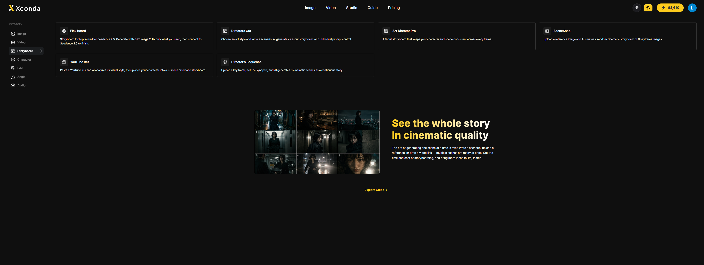
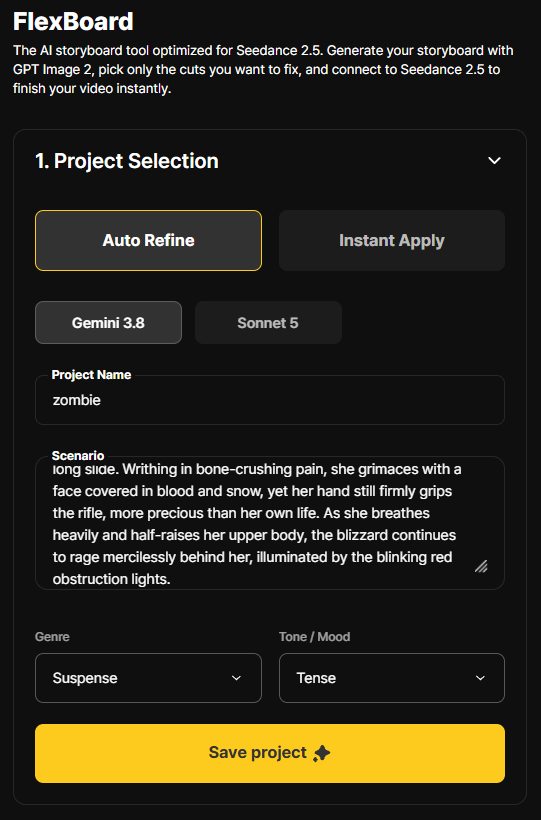

从 Storyboard 工具打开 FlexBoard
在 Storyboard 分类中选择 Flex Board，开始新项目。
在 Xconda 左侧边栏打开 Storyboard 即可在工具列表中看到 Flex Board 卡片。
选择标注为“为 Seedance 2.5 优化的 Storyboard 工具”的 Flex Board 卡片。
在工作区中点击 New Project 创建一个新项目，并打开 Project Selection 面板。


决定发生什么，以及它应该带来什么感觉
设置场景文本、类型与氛围，确定分镜的方向。
在 Scenario 中写入描述场景、角色、动作与情绪状态的句子。按顺序列出多个事件。
Genre 用于定义故事的类型；示例中为 Suspense.
Tone / Mood 用于设定场景的情绪基调；示例中为 Tense.
选择 Save project， 输入的项目设置就会被保存。下一步将调整参考图与分镜布局。


让同一主体贯穿各个分镜
把角色与重复出现的主体图像注册为卡片，再用 @imageN 令牌管理它们。
Add Cast 按钮用于 添加角色或重复出现的主体。每张卡片都会分配一个参考令牌，例如 @image1, @image2….
为每张卡片添加图像和易辨识的名称，例如 Protagonist 或 Zombie 1。在分镜剧本中可用令牌与名称识别主体。
每个角色单独使用一张卡片。替换或删除卡片后，请确认令牌与分镜文本仍符合你的意图。
Cast & Face Lock
本节汇集角色与道具的参考图。示例中显示了 Protagonist、多个 Zombie 与 Sniper Rifle 的卡片。
令牌的作用
参考图会以 @imageN 的形式出现在文本中，便于看出每个分镜描述指向哪些主体。

设定场景，然后决定需要几个分镜以及每个分镜的长度
添加共享背景，然后设置 Number of Panels 与 Shot Length。
Add Scene 按钮用于 添加场景背景。示例中背景卡片标注为 @image7.
Number of Panels 用于设置分镜数量。示例显示为 9 个分镜。
Shot Length 滑块用于设置每个分镜的时长。示例为 15s，界面上显示的范围为 4s–30s。
与剧本匹配
根据场景转换确定分镜数量。在 Text Preview 中检查生成的分镜是否按预期顺序排列。
估算时长
9 个分镜 × 15 秒，简单计算约为 2 分 15 秒。实际结果可能因视频生成流程而异。
在生成图像之前先检视分镜
先在文本分镜中确认场景顺序与参考图令牌。
点击设置界面下方的黄色 Text Preview Generate 按钮。
检查每个 CUT 卡片的场景描述、 @imageN 令牌，以及卡片底部的 SFX 文本。
如果分镜顺序、角色或场景转换感觉不对，请在生成图像前回到剧本或分镜数量进行调整。

在制作分镜图像之前，先确认叙事流程与参考令牌正确。价格与积分要求请在应用中查看最新信息。
每个分镜都有自己的图像
在文本阶段与图像阶段对比 CUT 卡片、描述与 SFX。
每张卡片标注为 CUT 01… ，没有图像时会显示“No image for this CUT yet”。场景描述与 SFX 显示在下方。
生成图像后，把每张图像与它的描述进行对比。通览整段序列，找出存在连续性问题的分镜。
对于有问题的分镜，选择 Edit 来调整它的提示词与参考图。
查看整体序列
用网格查看分镜之间如何衔接。检查顺序错乱或缺少场景的分镜。
图像与文本
检查每个分镜图像是否体现了描述中的角色、场景与动作，以及 SFX 氛围是否契合。


熟悉每个分镜卡片上的工具
使用每个分镜上的操作，只对你选中的分镜进行编辑、替换或下载。
只选择需要修改的分镜。保留效果良好的分镜，只对有问题的分镜打开 Edit。
简短的指令用 Quick Edit，若想更详细地检查镜头、相机与参考图，则打开 Detailed Edit。

用一句话描述你想做的修改
选择分镜、添加参考图，或在 Edit prompt 中指定修改范围。
在想修改的分镜上选择 Edit。通过弹窗顶部的编号确认目标分镜，例如 CUT 04.
Reference images / Add 可以为这个分镜添加参考图。
Edit prompt 用于输入期望的修改。输入框提示说明可用 @ 令牌指定参考图。
Apply edit — 先确认目标分镜、指令与积分提示。若需更细致地调整镜头与相机，请打开 Detailed edit.
相机在哪里，又该如何移动
详细检视并重建单个分镜的剧本、相机设置与参考图。
左侧是当前分镜的大图预览，右侧是 Scene / Details 以及 Scenario、Shot Size、Camera Angle 与 Camera Movement。
Shot size 控制取景，angle 设定相机的高度与倾斜，movement 决定相机的移动方式。
示例由 POV · Low Angle · Handheld 改为下一组设置。 Extreme Wide Shot · Dutch Angle · Track Out.
确认参考图与设置后，选择 Regenerate。界面显示 20 积分。
修改前
POV · Low Angle · Handheld。紧张、以角色为中心的构图。
修改后
Extreme Wide Shot · Dutch Angle · Track Out。更宽广、倾斜的构图，相机向后移动。


检视并调整参考图的顺序
以列表方式管理分镜中使用的角色与背景参考。
Reference images for generation 会列出 Character / Background 卡片与 @imageN 令牌。
如下方说明所示，通过拖拽重新排列卡片。 角色与角色、背景与背景互换。对比排序前后的卡片列表。
如有需要，可添加 ＋ Character / ＋ Background 参考；然后选择 Reset to automatic selection 即可恢复默认选择。
修改前
参考图列表显示 @image5、@image2、@image4 与 @image7。
修改后
重新排序后，再次确认角色令牌的卡片顺序与剧本中的参考。输出图像需另外重新生成。